Overview
The Challenge
Cancer is one of the most chronic disease, people that have just been diagnosed with Cancer often find theirselves being overwhelmed with all the information, medications, procedures and symptoms they suddenly have to take care of that it gets difficult to keep up with tracking them.
These complex treatment process can be difficult to maintain and could lead to problems like inconsistent drug use, missing appointments or not being able to give proper information about symptoms severity to their doctors leading to misdiagnosis. How can people be equiped with a tool that would help them manage their health better?
Design Process
To tackle this challenge, I started with user research, moved into the ideation phase, analyzed the information architecture of the app, followed by wireframes, user interface design, visual branding and digital illustration, and finally high-fidelity mockup, evaluations and iterations. More details on how I went through this process and the final product are shown below.
Duration
2 months
My Role
User Research
Visual Design
Interaction Design
Information Architecture
Prototyping
Testing
Tools
Pen and Paper
Figma
OptimalSort
Maze
discovery
Kicked off the discovery process by trying to establish the project goals, understanding the user audience, their pain points, reviewing existing concepts, and picking a design strategy.
User Research
Approaching the project with a user-centered approach helped me to devlop empathy with users, and properly understand the target audience, know the questions they have before trying to create solutions for them. This path helps with the process of trying to answer questions like:
- Who are the users?
- Who are the users?
Personas
To put faces to the users, “get into their minds” , empathise with them better, see things from their own perspectives, and accurately answer the research questions, I created personas.
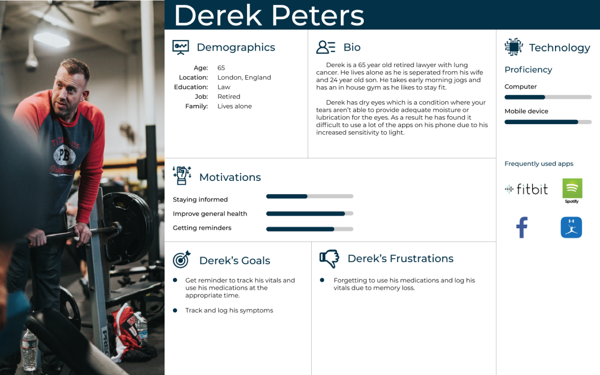
Derek started chemotherapy a few months ago after being diagnosed with cancer. He records his body vitals as one of the ways to keep track of his health, he has been using the Notes app on his phone to record his body temperature and weight. He also forgets things easily and sometimes forgets to take his drug at the right time or forgets to use them totally. He currently uses the alarm app on his phone to set reminders to take them.
He would like an app where he can add his medications easily by scanning the barcode on the pack and getting reminders automatically when it’s time to use them. He also wants to be able to record all of his vitals, keep track of them, compare the data over a period of time and share with his doctor when he needs to.
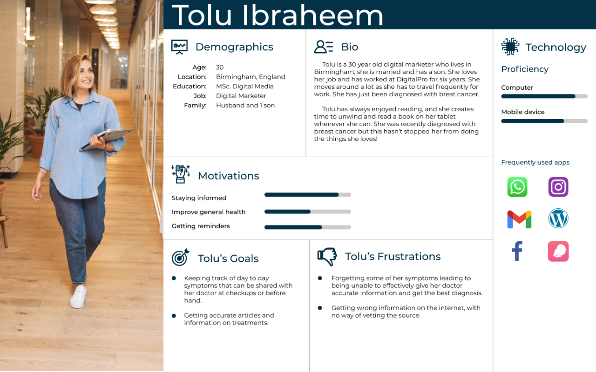
Tolu is currently undergoing radiation and chemotherapy, she has found the treatments to be harsh and has been experiencing some symptoms as a result. She goes in to see her Chemotherapist weekly but she sometimes forgets the level of severity of her symptoms in particular moments over the course of the week, leading to bad diagnosis or treatment. She also currently runs all information through her doctor for confirmation.
She wants an app where she can get reminders to keep track of her mood and the symptoms she’s currently experiencing, compare the data over time and easily share them with her doctor, and also provide her with new or top articles about cancer, easily search through list of articles and save them or add them to her favorites tab.
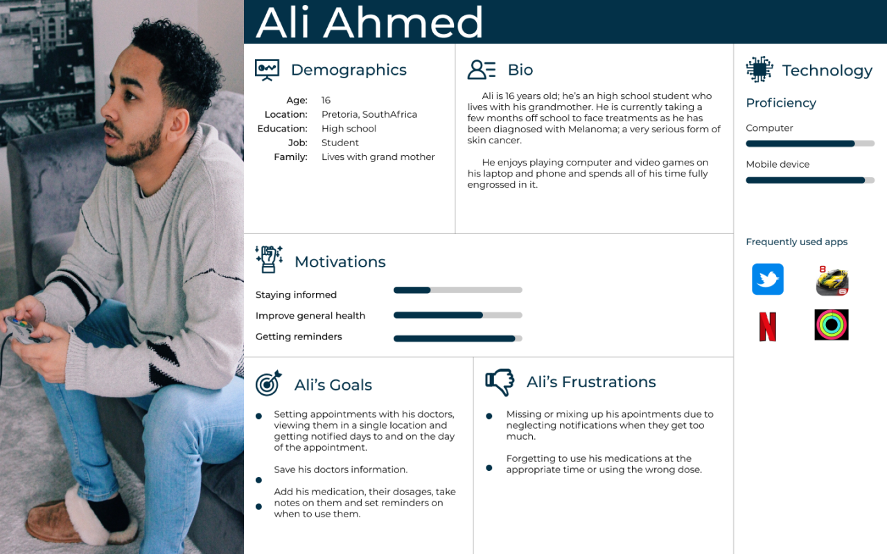
Ali’s doctor has recommended a number of surgeries to treat his Melanoma. Before the surgeries, he has to set up appointments with his different doctors first for consultations, to provide him with more information on the procedures and decide on the best date for the surgery.
It is currently difficult for him to keep track of all these appointments and sometimes ends up mixing them up and going to the wrong place or showing up at the wrong time. He wants an app that would help him record these and also send him reminders leading to the time and date of the appointment.
By using the user personas, and looking at the user’s pain points, motivations, and core needs, I was able to come up with the core goals and define the functions of the proposed solution:
Core Goals
1Visualize
Making the app usable for everyone by visualizing thingseverywhere possible.
2Interactive
Create an interactive and easy to use app.
3Minimum clicks
Help users achieve their goals with minimum clicks.
Functions
1
Add medication and get reminder notifications.
2
Add appointments and get reminder notifications.
3
Track vitals and symptoms and generate reports.
4
See Upcoming activities
5
Read articles.
information architecture
At this stage, I started looking at the best way to organize and categorize the features within the product, the best language and labelling to use to ensure that users are able to find features easily and increase the usability of the product.
Card Sort
In trying to make sure the product will be usable and users will get the best experience, some participants were recruited to take part in an online card sorting session to observe patterns, how people grouped things and what language they used.The information gotten from this card sort was used to get an idea of how the categories should be organized and what language to use.
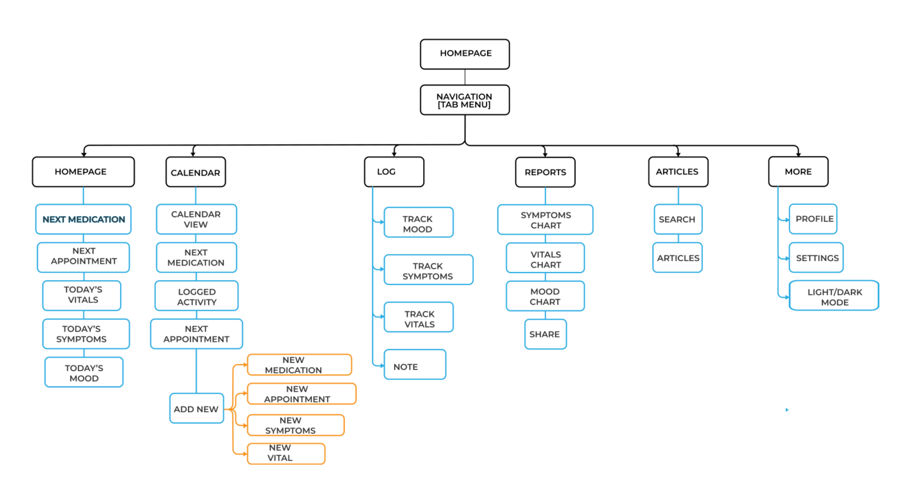
design approach
Looking at the defined functions and how the user’s will use the product, different media were considered to determine the best medium for this product.
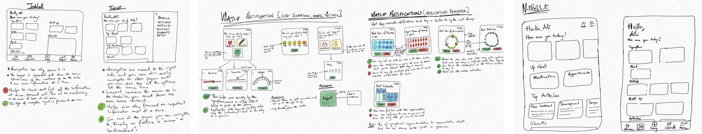
As there will be a lot of activity during the day that requires the user to open the app and enter values or perform an action, the tablet might not be the best option as it is too large to carry around at all times. The smart watch is perfect for logging activities and getting reminders but it will be difficult to perform some of the other important functionalities as the screen is too small. It would work better as a secondary app but not as a stand-alone product. The screen of the mobile phone provides enough space for the functionalities to be displayed properly without difficulty and since most users will have their mobile phone with them through the day, it will be easier to get notifications reminders and act on them immediately. So the mobile phone was chosen as the best medium to go ahead with.
Explorations
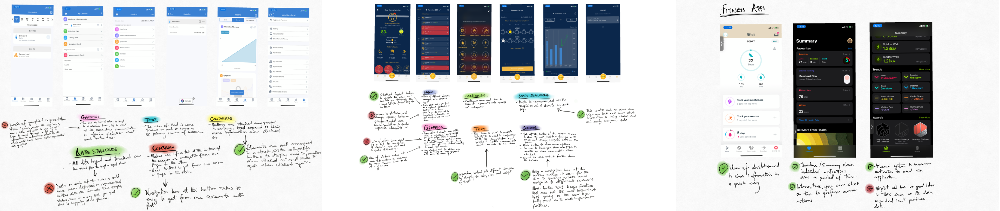
Breaking down and analyzing the directions that existing health tracking applications have used helped me to find out what has worked for them, and things that didn’t work for them to further inform the design direction to take. Taking the successes from this application as well as some Donald Norman’s principle of interaction design i.e Visibility, Affordance, and Consistency, I was able to define the principles that would guide our design approach.
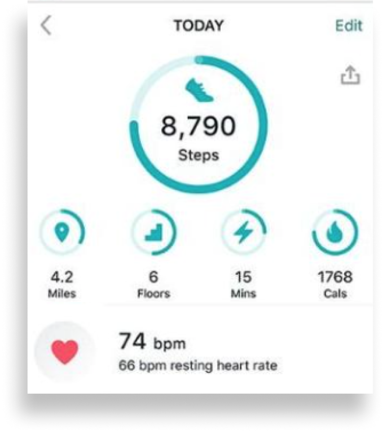
1Visualize
Making the app usable for everyone by visualizing thingseverywhere possible.
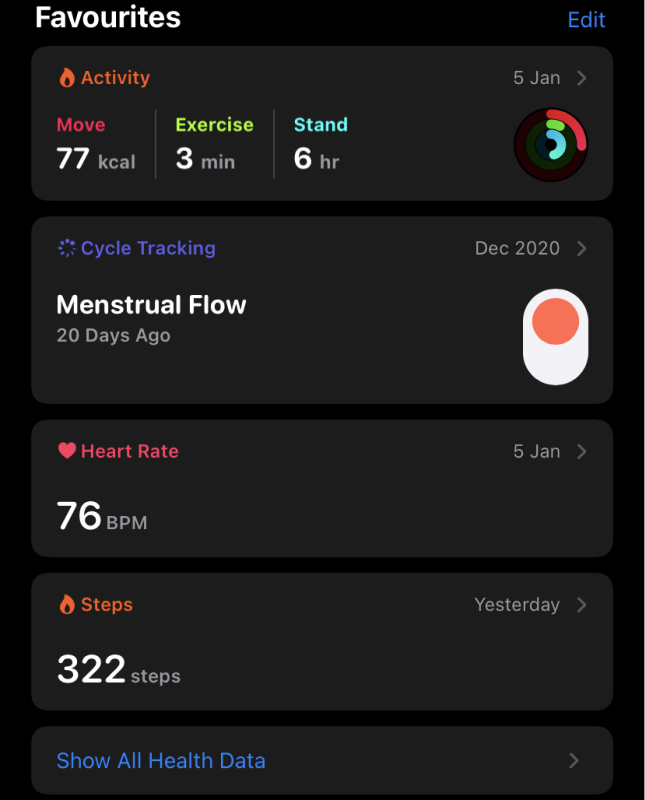
2Interactive
Create an interactive and easy to use app.
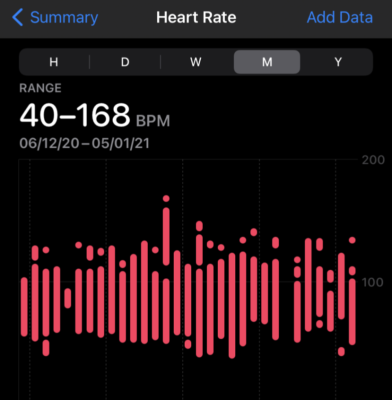
3Minimum clicks
Help users achieve their goals with minimum clicks.
ideating
At this point, I started to think about how all of these could be integrated together, then wireframe my thoughts of what I thought would work and analyze them testing different approaches. I explored different initial sketches, breaking down what could work from each one or what to take out. Some of the initial concepts can be seen below.

To get a sense of how the product will look, what is going to work and what won’t work before designing the final prototype, I created paper protoypes and wireframes with the ideas I was going ahead with.

visual design
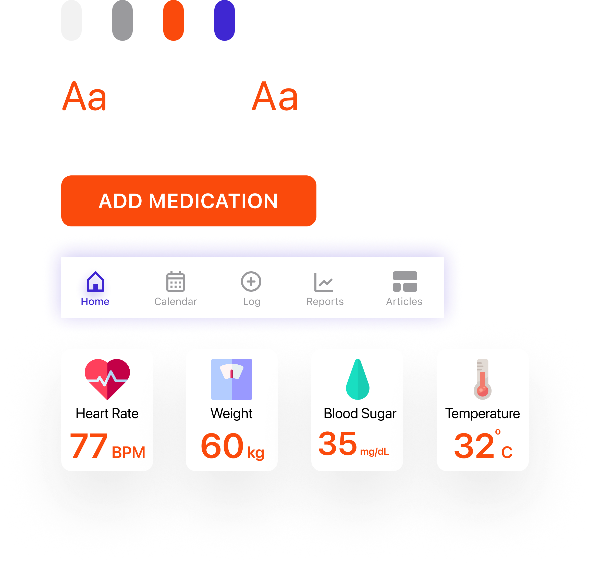
In order to create a Consistent and good user experience, it was necessary to define the design style guide for the components like texts, bottons, cards, illustrations, icons e.t.c.
The design style was focused on communicating a friendly, mordern and legible tone as CancerCare will be used by users of all ages. The friendly design is to allow the user feel connected to the product which makes it easier for them to keep using the product to enhance their every day lives. The vibrant illustrations combined with texts on the cards helps older users alongside people with visual impairments or non-native english speakers understand what each element does.
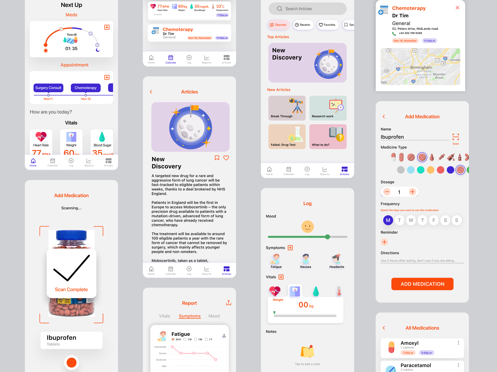
solution
The final Solution, CancerCare is a mobile application designed to help people with cancer manage their health better by allowing them add their medications, appointments, keep track of their symptoms, mood and body vitals easily and sending them reminders often to record them to ensure they don’t forget, as well as a way to find articles on cancer. A clickable prototype was created using Figma’s design and prototyping features.
evaluation
A combination of the Think-aloud protocol and the Remote usability testing methods were used to carry out the tests and help with the collection and evaluation of data. Tested with users accross a range of demographics, age, computer proficiency level, if they’ve used similar apps or have a visual impairment to properly cover most of the basis of our target users. The key things to be evaluated were the Usability, Findability, Learnability of the application. The participants were asked to perform these tasks: Add Medication, Record body vitals, Record mood and symptoms, Read an article, Add appointment.
The participants were prompted to speak aloud and voice their thoughts while completing the tasks, to enable me to take notes of their observations or issues with the app while observing the process. I conducted the test sessions using Maze which automated the collection of task completion times, user’s paths, heat maps, misclick rates so a combination of these and the SUS form participants completed at the end of the session formed the quantitative data. An SUS score of above 68 is considered a good score in the aspect of effectiveness, efficiency and ease of use, but I noted some barriers users had while using the app.
Iterative update
After the analysis of the User tests, I went back to the design to make changes and modifications to some of the screens were observations had been made.

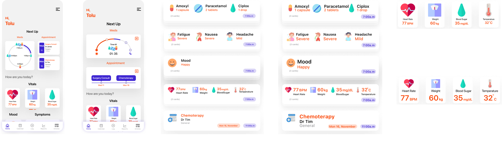
reflections
After the evaluation, it was observed that users found the app easy to use and they were able to achieve their goals after a short period of using it. If there was more time available, I would have worked on more design assets like: an Onboarding screen, A walk through guide for new users. Also add features like: Chat function with doctors, Ability to add a caregiver to monitor patient’s activities.
By working with users from the start to the finish of the project, I was able to get to a final solution that could properly suit their needs. Creating sketches, wireframes, and paper prototype, helped to properly visualize as well as get feedback early on; this helped me save a lot of time and resources in the long run.
Collaborating with a developer would help to better understand the possibilities of the product, and validate feasibility.
Another step would be to test with more users and gather more feedback based on actual use in day to day environments, and re-iterate the product to suit the needs of the users. A constant re-iteration process and and development would be implemented.
View prototype here